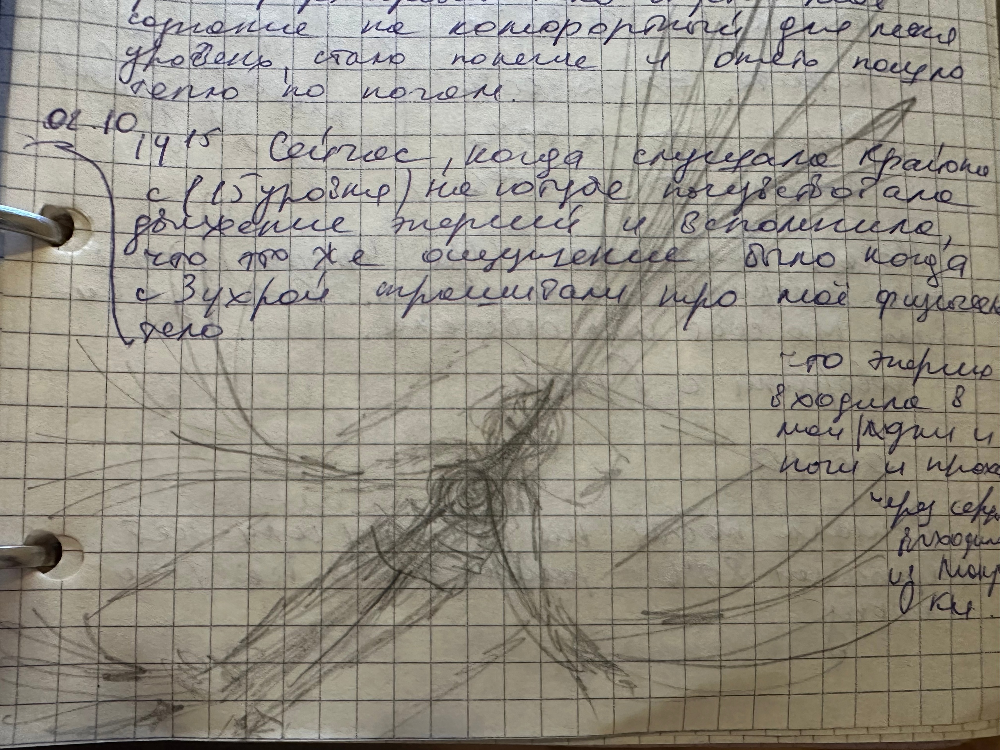

… «Форма тела создается на тонком плане и соответствует эфирному телу. Эфирный "обрис" первичен, под него подрастает физическое тело и только когда сначала уменьшается эфирное тело, то уменьшается и физическое. Поэтому вы можете постройнеть, манипулируя с телом, но потом оно все равно вернется к своей проекции на тонком плане. Предположу, что все таки есть какие-то методы управления тонкими телами, но мне они пока не очень ясны. Например, если их почистить, то уменьшится эфирное тело ?»…
🖕 цитата из моего дневника, запись сделанная приблизительно пару лет назад.
Вернемся к разбору послания от Высших Сил, описанного в предыдущей статье.
Вечером 30.09 консультировалась с подругой ченеллером «И»:
запрос :: ?… спросить у ВС, почему я набираю вес? … так как не понятен данный мне ответ …?
ответ :: … что я получаю много знания - не хватает действий формирования руками энергетических пакетов информации, а иначе эта энергия накапливается в моем теле и оно расширяется … что я получаю ответы в виде цифровых голографических кодов и эти коды надо передавать дальше … еще не хватает белка … нужно больше физического взаимодействия, что когда к людям подходила и говорила про уровни развития, то это был правильный посыл, не нужно переживать, что не поймут, кто надо, тот поймет … в общем не хватает проявления … то, что у меня есть канал в Дзене, это не совсем тот ресурс, а главное надо больше передавать знаний … использовать рисунки и схемы, как в дневнике … со мной взаимодействуют с очень высокого уровня вибраций … ::
осмысление ::
- мы долго с ней думали, что же это за цифровые коды мне передают? И до меня наконец дошло, то что я могу определить уровень развития души и уровень развития сознания - это же в числах озвучиваю и определяю их своим видением на голографической проекции ...🔥
- формировать руками пакеты информации - это писать на клавиатуре (поэтому видимо мне пришло - Жорж Санд) и использовать рисунки и схемы из дневника (я действительно очень часто делаю зарисовки того, что вижу на тонком плане), так как для некоторых сознаний восприятие информации через цифры и рисунки будет идти по другому, чем текстовые описания тех же процессов
- конкретная рекомендация, что не хватает белка (поэтому видела яичницу😆)
- знание идет от большого источника (поэтому мне пришло Солнце) и я ее принимаю и держу в себе
- а самое главное надо больше передавать знания, больше консультировать и тем самым не накапливать энергию в своих тонких телах, из-за чего увеличивается эфирное тело, и как следствие физическое 🔥
На следующий день, я попросила свою подругу целителя «З», спросить у ее ВС:
запрос :: … ? что значит ТЫ НЕ ОБРЕТАЕШЬ ТЕЛО, что же конкретно мне надо делать?…
ответ :: … «З» положила на меня свои руки и сказала, что у меня «вода застаивается» … что в моей энергоструктуре все хорошо в последнее время … видит меня стройной в будущем … что я слишком много придаю значения новому телу, много мыслей о нем … что не хватает принятия моей женской стороны … что придет время и я сама пойму, что именно нужно делать, что бы трасформировать тело… ::
в процессе :: ✨потом начала чувствовать движение энергии. Через ладони и стопы энергия из моего поля вокруг входила в позвоночник и проходя через сердечный центр выходила вверх через макушку. По рукам, ногам (по внутренней стороне сильнее), по животу и сердцу стало разливаться вибрационное тепло. Это было новое ощущение для меня. И это продолжалось еще несколько часов✨
осмысление :: то, что вода задерживается я давно уже изучаю и пока не нашла ответа, почему идет чередование процессов - иногда лимфа работает отлично, а потом несколько дней идет застой жидкости в теле ? :: ее слова очень сильно успокоили и придали уверенность, ушло переживание о будущем и пошло тепло по телу, и с принятием тела стало по другому ::

Это 2-я статья на тему энергообмена в теле, о котором будет более подробное описание в последующих публикациях.
Продолжение следует.
С любовью 🙏🙏🙏